Introduction
Contenu
Introduction¶
Pendant ce stage, vous serez amenés à utiliser des outils et technologies que vous ne connaissez peut-être pas.
Cette documentation est-là pour vous faciliter la vie; c’est une sorte de tutoriel qui va vous expliquer comment utiliser ces technologies.
Dans la suite de votre stage, vous allez sans doute aussi être introduit à de nouvelles choses que je n’ai pas connu; ce sera donc à vous d’améliorer ce manuel afin que le stagiaire suivant puisse suivre rapidement et efficacement.
Section Jamf¶
Avant de commencer¶
Description Jamf¶
C’est une application utilisée par les administrateurs système pour configurer et automatiser les tâches d’administration informatique pour les appareils macOS, iOS
Connexion au Jamf Pro¶
Pour accéder au Jamf Pro, vous allez passer par son appliance WEB -> https://10.225.232.161:8443 -> Jamf Pro Serve Server
Identification¶
Jamf Pro vous demande de vous logger avec un compte utilisateur:
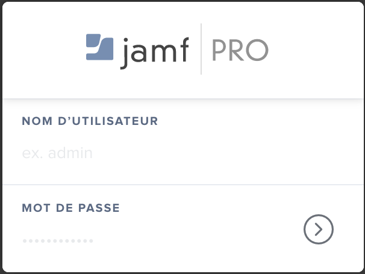Identifiant pour un utilisateur JamF Pro
Identifiant
Gychameta
Mot de passe
Gym_09
Identifiant pour un super utilisateur Jamf Pro se trouve dans Password State (DGEP Password) mais vous allez pas avoir besoin de vous connecter au Jamf en tant que superuser.
Jamf Pro¶
Après avoir se connecter au Jamf Pro sans erreur. Vous aurez une interface qui resemble à ce que vous voyez dans la capture ci-dessous.

Ajouter une règle¶
Dans dashboard (accueil) du jamf, allez sous ordinateur en haut à gauche et cliquer “Règles”.

Ensuite, cliquez sur nouveau en haut à droite.

Sous Général donner lui un nom (nom de l’application ou ce que vous voulez).

Toujours dans Général descendez et cochez les options indiquées.

Maintenant allez sous “Paquets” (dans la colonne de gauche).

Cliquez sur “ajouter” à droite sur le paquet que vous voulez.

Quelques options suplémentaires comme les mises à jour et le point de distribution.

Ensuite allez sur Maintenance (dans la colonne de gauche)

Regardez que la première case est cochée (Mettre à jours dans l’inventaire)

Si tout est bien configurer passons au “Perimètre” de la règle.
Selectionnez un ordinateur ou un groupe dans ce cas là ça sera un groupe.
Pour l’ajouter cliquez sur “add” à droite du groupe.

Permet de mettre à disposition la règle pour tout les utilisateurs.

Se paramètre permet d’afficher l’état d’avancement de l’implémentation de la règle.

Félicitation vous savez créé une règle.
Créer une règle pour ajouter une imprimante dans Jam¶
Avant de débuter¶
Il faut ajouter l’imprimante sur le poste, je vous laisse la marche à suivre sur le lien:
et¶
Rajoutez l’imprimante dans Jamf admin si ce n’est pas déja fait .
Sinon allez sur Jamf Admin et cliquez sur “add printer”.

Mettez l’imprimante que vous voulez pour le retrouver dans Jamf.

Maintenant ouvrez un navigateur et allez sur le Dashboard de Jamf.
Ensuite dirigez vous sur ordinateur -> Règles
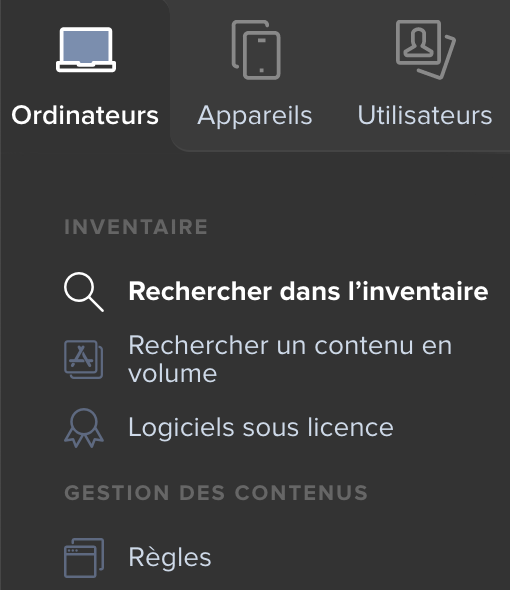Après vérifier dans les règles déjà existantes s’il y a l’imprimante que vous chercher.

Si elle n’est pas la crée une nouvelle règle
Donnez-lui un nom, en cohérence avec l’imprimante que vous voulez (Exemple : Add_Print_b25)
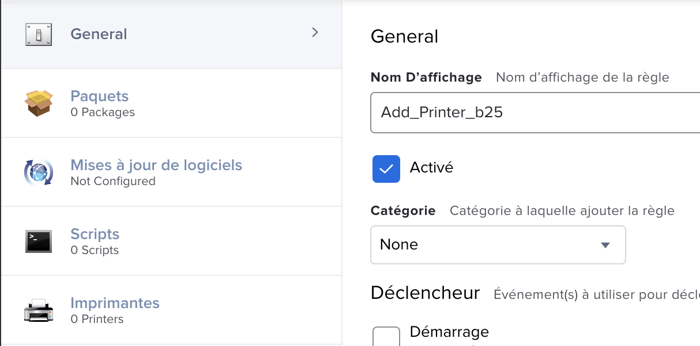Maintenant allez sous imprimantes.

Cliquez sur “Configure”.

Ajoutez l’imprimante que vous voulez.

Pour finir allez dans périmètre.

Sélectionez le groupe ou un ordinateur que vous voulez (vous pouvez en choissir plus)

Il manque plus qu’à appuyer sur “Terminer”.
Félicitation vous savez créé une règle pour ajouter une imprimante.
Déploiement OS depuis Jamf¶
Copy le logiciel¶
Pour déploiement OSX sur une machine, il y a deux étaps principeaux, il nous faut d premièrement copier le package depuis le serveur dans le dossier application de la machine en local, ensuite nous pouvons le lancer pour reinstaller le système.
Tous ces différents règle se trouve dans Jamf.
Jamf/Règles¶
Allez sur l’onglet ordinateur de Jamf et ensuite “Règles”. Ici vous pouvez faire une recherche pour trouver une règle qui nous aide à copier le package OS depuis le serveur. Si vous ecrivez “copy” dans le champ de recherche il vous affiche les differents packages d’OS.

La version de l’OS (HighSierra, BigSur, etc…) va dependre de la machine sur laquelle vous vous voulez faire cette installation. Pour trouver des infos sur l’OS de la machine vous pouvez maintenant cliquer sur l’icône d’Apple au coin de votre monitor et choisir “à propos de ce Mac”.
Quand vous êtes sur de la version de l’OS que vous allez installer, vous pouvez selectionner n’import quelle règle et regarder ses configurations. Ici vous voyez un champ qui s’appelle “Evenement personalisé” la valeur de ce champ permet de declancher l’execution de cette règle.

Ce processus est similaire entre les règles et on peut les appeler par leurs propres declancheurs.
Jamf/Terminal¶
Copier le package¶
Nous pouvons maintenant passer à faire l’installation sur la machine client. Ovrez d’abord le Terminal de la machine, l’installation des packages depuis Jamf peut se faire en ligne de commande.

Il nous faut d’abord copier le package depuis le serveur sur la machine client en local. \Ce-ci est la commande pour copier avec Jamf.
sudo jamf policy -event copycatalina

Note
sudo: il vous permet de lancer des commandes en tant qu’administrateur, dans notre cas pour lancer la commande “jamf” il faut un droit d’administrateur.
jamf: la commande que permet de lancer le jamf-CLI (Commande Line Interface) et donner des tâches spéicifique à Jamf
policy: cette commande dit à jamf de contôler les differents stratégie dans le serveur de logiciel Jamf (JSS - Jamf Software Server)
event: cette une option/flag qui modifie le fonctionnement d’une commande. Ici notre flag appelle un declancheur pour notre package. Il dit à commande “policy” de prendre l’evenement “copycatalina” dans JSS.
declancheur: c’est un evenement personalisé qu’on avait vu dans les paramètres de cette règle
Quand le package est copié, on peut le voir dans le dossier /Applications, on peut maintenant passer à l’étap suivant.

Effacer le système et le reinstaller du zéro¶
Toujours sur la machine client, ouvrez le Terminal. Cette fois pour effacer l’OS et le reinstaller de nouveau. Cette commande efface le système entièrement ensuite install le package OS qu’on vient de copier dans le répertoire /Applications.
sudo jamf policy -event eraseinstallcatalina

Comme on voit dans la photo, le declancheur pour effacer et installer est “eraseInstallCatalina”. Quand cette commande est lancée on peut le laisser, il fera ce procès tout seul.
Après l’installation il rest que les configuration de la langue et region à faire.
Recherche avancé¶
Dans le menu de Jamf Pro > le tab “Ordinateurs” , cliquez sur la “Recherche dans l’inventaire”
Vous voila devant les recherches avancées, vous pouvez voir les régles déja misent en place. Cliquez sur add pour une nouvelle recherche avancée Donnez un nom à la regle. Vous avez plusieur option à disposition, choisissez les bonne caractéristique.Vous pouvez en rajoutez au tant que vous voulez.
Vous pouvez plusieur option à cocher, choisissez les bonnes coches pour la règle. dans la dernière partie vous touchez au type du rapport et le télécharger.
Cliquez sur afficher pour voir le résultat
dans la dernière partie vous touchez au type du rapport et le télécharger.
Cliquez sur afficher pour voir le résultat
exemple de recherche avancé¶
Dans l’exemple , je vais utiliser une recherche avancer déjà crée
Ensuite cliquez sur afficher en bas a droite. la recherche vas afficher ce que vous demander et maintenant on va effacer un ordinateur (dans ce cas). Cliquez sur un ordinateur (que vous voulez sup.)et allez en bas a droite sur la poubelle et double-clique.
puis valider la pop-up qui apparait Sinon aller au "début" sur afficher en bas à droite il y a un bouton action.Selectionner les ordinateurs.
Cliquez sur suivant et suivez les demandes. TerminerMise à jour des applications dans Jamf¶
Types des packages¶
Quand vous télécharger la nouvelle version de votre application/package, son type/format sera en pkg ou DMG.
Si c’est un PKG on est bon et on peut passer à l’étap Charger le PKG dans JamfAdmin. Si c’est un DMG, nous allons essayer de créer un PKG.
Création d’un PKG à partir d’un fichier DMG¶
Prenons comme exemple VLC qui est un DMG.
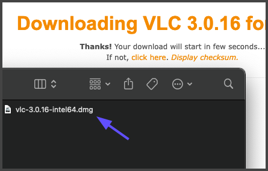Double cliquez sur ce package et l’installez sur votre système.
Ensuite dans le dossier /Applications vous aurez la nouvelle version du VLC, glissez le dans le paneau gauche du JamfComposer
Cela sera ajouté dans la liste des packages à traiter dans JamfComposer.

Ensuite nous pouvons aller changer le nom du package pour que il aie la même norme de nommage que les autre packages.
GYCH_VLC_3.0.16.pkg
GYCH ou ALL pour montrer que c’est un packet global (ALL) ou specifique pour un etablissement (GYCH)
VLC: ici vous mettez le nom du package, normalement vous n’avez pas besoin de changer le nom du package
3.0.16: la version du package vient après le nom du package, l’info sur la version du package se trouve dans “à propos” de chaque application

Maintenant on peut passer à créer le package en cliquant sur le “Build as PKG”
Choisissez ou vous sauvegardez votre PKG et JamfComposer commence à créer le PKG.
Charger le le PKG dans le JamfAdmin¶
Nous avons maintenant un package en format PKG qui est pret à être chargé dans le JamfAdmin. Ouvrez le JamfAdmin, et il vous juste suffit de glissez le .PKG dans JamfAdmin.

Après avoir le mettre dans le JamfAdmin, sauvegardez les changements et le package sera accessible depuis le Jamf dans les règles.
Modification des règles pour le package¶
Ouvrez le Jamf dans votre navigateur, ensuite aller dans Règles Chercher le nom du package (VLC dans notre cas), modifiez le et dans “Paquets”, effacer l’ancien package et ajouter le nouveau puis sauvegardez.

Pour finir, aller dans “Groupes intellignets” et chercher le nom de votre package. Vous allez trouver un group qui un nome commençant par “InstallUpdate_”

Ensuite, tapez la nouvelle version du package dans le champ et sauvegardez.

Comment enrôler un post dans Jamf¶
il y a différent moyen d’enrôler un poste :
Cela ce fait automatiquement des le moment de l’installation (configuration du post du tout début)
Ou grace a un site web (après configuration)
Dans ce doc, je vous explique la deuxième méthode
Se connecter à DGEP Enroll¶
sur la machine que vous voulez enrôler, ouvrez un navigateur et notez dans l’URL cette adresse
https://aus000021.dgep.edu-vaud.ch:8443/enroll
n’oubliez pas le https
pour vous identifier:Identifiant |
Mot de passe |
|---|---|
jamfenroll |
DGEPEnroll2019 |
Après ne remplissez pas la première ligne et indiquer juste dans quel gymnase vous êtes “GYCHA”
En suite cliquer et télécharger le premier profils⚠ Quand le profil est installé revenez sur la page pour installer les autres profiles restants.
Voilà vous l’avez enrôler.
Comment enroller un Ipad dans Jamf¶
on aura besoin de l’application gratuite sur l’app store “apple configuratior 2”

l’application sera comme ceci.
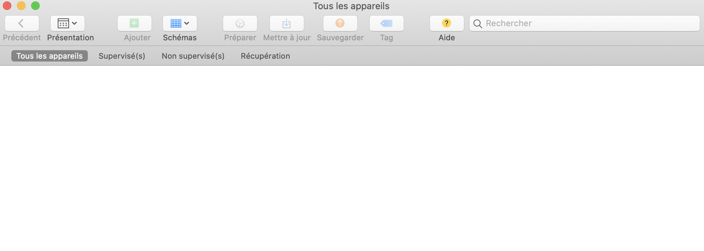Ensuite, brancher l’iPad sur l’ordinateur pour commencer la configuration. et faites confiance à l’ordinateur ( ipad ).
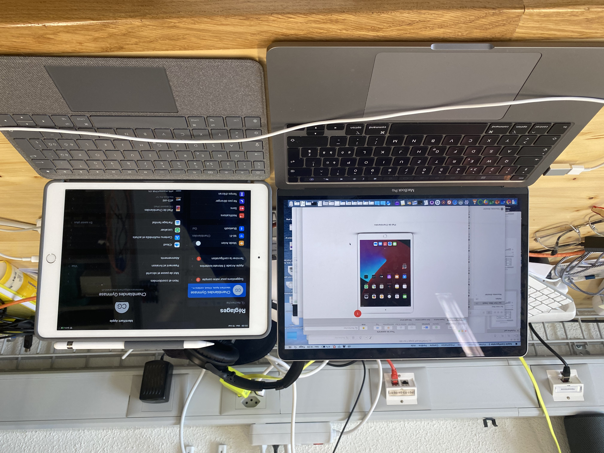Début de la manipulation¶
une fois connecter cliquez sur préparer (barre de menu)
Choisissez une configuration manuelle, cochez “superviser l’appareil” et autoriser le jumelage.
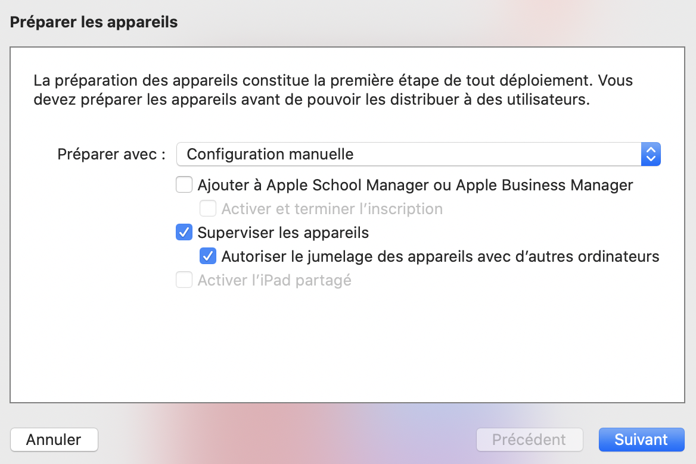Il vous demandera si vous avez un serveur mdm, vous sélectionnez “ne passe s’inscrire… MDM”
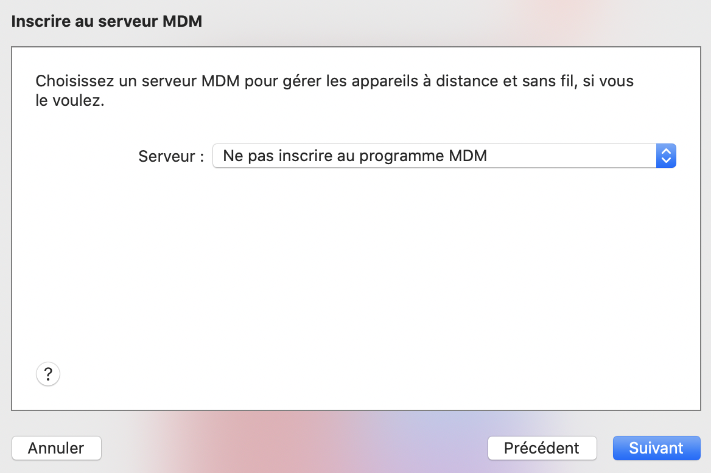Maintenant vous allez créer une organisation pour Chamblandes, si l’organisation est déjà créée vous pouvez la sélectionner.
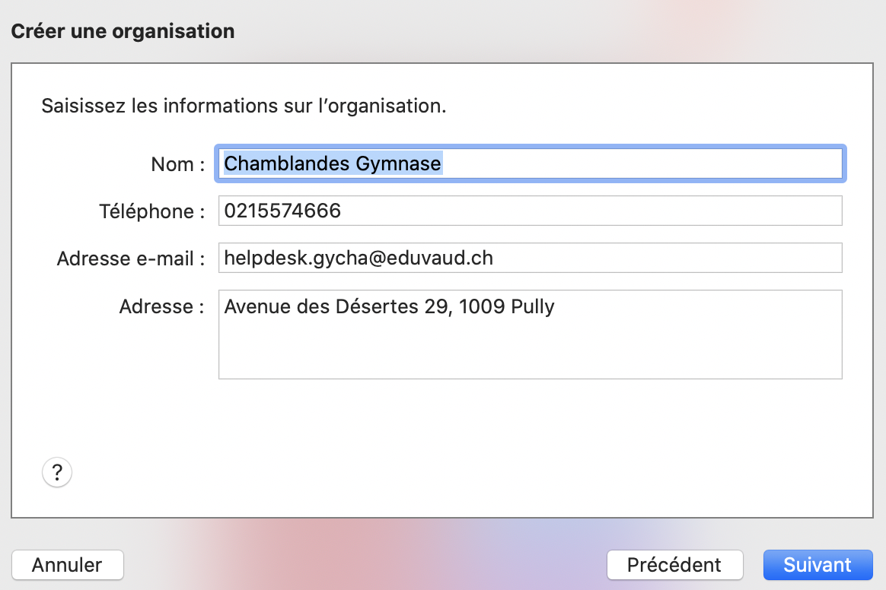Choisissez-les configurations que vous voulez sur votre iPad.
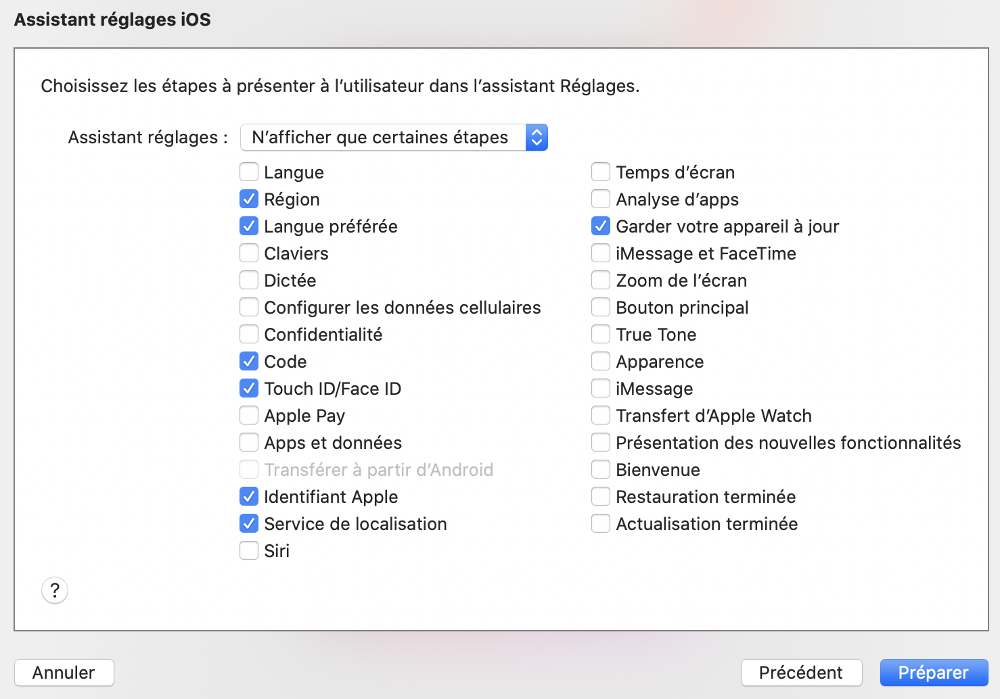Voilà il ne reste plus qu’appliquer les paramètres sur l’iPad.
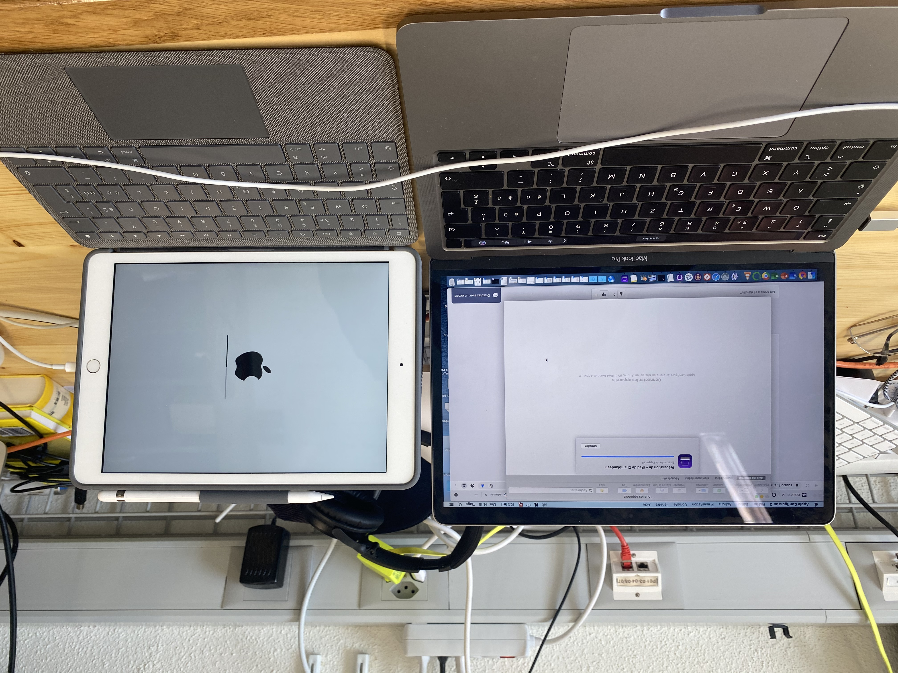Author: Noor Mohammad Alizadeh Date: 07-dec 2021 Description: Prevent Jamf automatique logout
Fermeture Automatique de la sesssion¶
Ici au GYCHAM nous avons un profile qui ferme automatiquement la session d’un utilisateur après un certain temp pour la raison de securité.
Je vous montre où se trouve ce profile parce que vous aurez besoin de le désactiver pour un ordinateur afin de pouvoir faire des tests au dessus.
Désactiver la fermeture automatique d’un session¶
Vous allez tout d’aborad vous connecter au Jamf
Dans le menu, allez dans “Configuration Profiles” et cherchez le mot “ChangeUser”

Modifiez ce profile et ajouter le poste que vous volez dans la liste d’exclusion
Ensuite sauvegardez votre modification et choisissez “Distribute to all”
Section Utile¶
Identifiants et mots de passe¶
Plusieurs identifiants et mots de passe peuvent vous être utiles afin que vous puissiez vous connecter à différentes choses.
Ce chapitre est une liste non exhaustive des identifiants et mots de passe que vous aurez besoin et quels sont leur utilités.
Pour avoir une liste plus complète, vous pouvez aller sur DGEP Passwords. Pour y accéder un mot de passe admin doit vous être créé.
Connectez-vous¶
Rendez vous sur ce site (doit etre connecter au reseau du gymnase) DGEP Passwords.
Et utilisez votre identifiant comme pour vous connecter au serveur de fichier de Chamblandes.
ensuite selectionez postone Tour.


Hermes II¶
Hermes II est un outil qui vous sera fourni et qui vous permettra de rechercher des informations concernant les élèves, maîtres et classes du gymnase.
Hermes ne pourra être accédé uniquement à partir du réseau du gymnase. Son adresse est la suivante:
https://hermes.edu-vaud.ch/login/
Connexion¶
Une fois que vous êtes sur le site, vous devriez voir le formulaire suivant:

Warning

Le compte gychameta ne fonctionne plus, utilisez votre compte eduvaud pour vous connecter.
Ensuite, rentrez votre identifiant et mot de passe de votre compte qui est dans l’AD. Sélectionnez, comme sur l’image ci-dessus, le champ Service pour la première combo box et Gymnase de Chamblandes pour la deuxième. Il suffit après cela d’appuyer sur le bouton Connexion.
Vous devriez ensuite vous trouver sur une page qui ressemble à ceci:

Horaires¶
Vous pouvez ensuite consulter les horaires des élèves, maîtres et salles du Gymnase.
Après avoir cliqué sur Horaires, vous devriez voir le formulaire ci-dessous:

Mettez dans le champ Recherche l’élève, maître ou salle que vous recherchez, par exemple comme ceci :¨
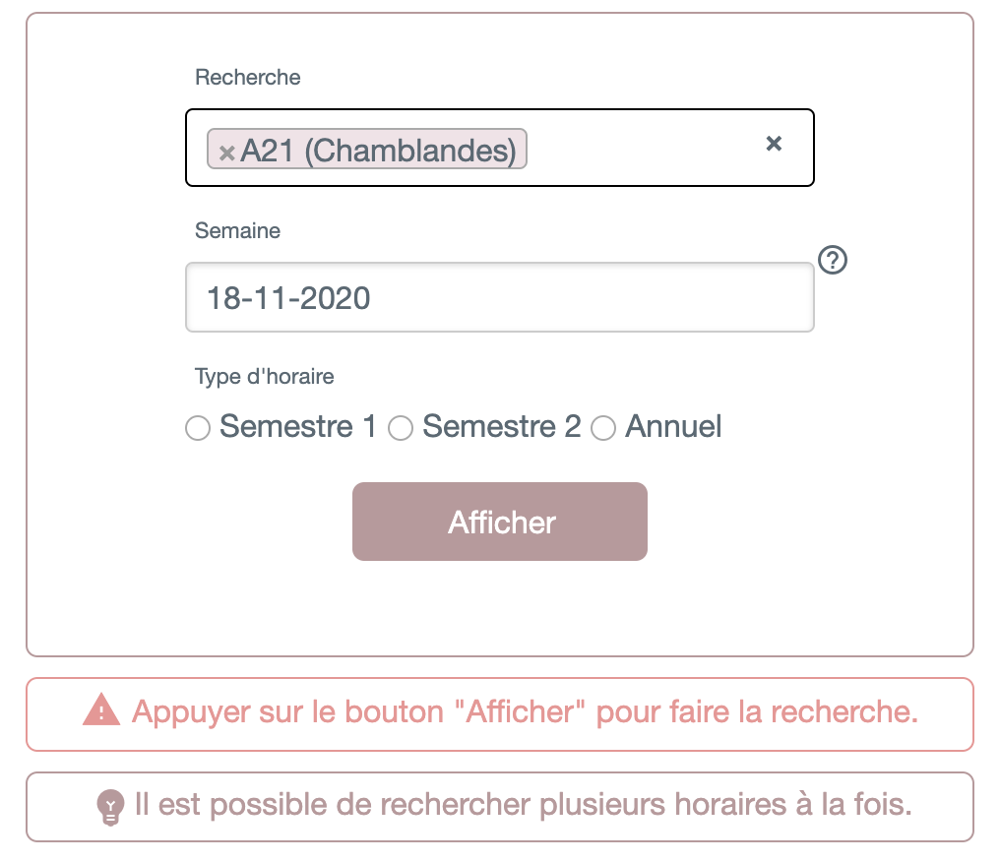Il est aussi possible de choisir un semestre ou une semaine spécifique.
Si vous appuyez sur Afficher, vous devriez voir un horaire qui s’est généré, comme suit:

Sur cet horaire, vous pouvez retrouver des informations telles que quelle matière est enseignée, qui est l’enseignant qui donne le cours ou encore quelle est la classe qui assiste au cours.
Tip
Il est possible d’afficher plusieurs horaires en une fois et les informations seront superposées et triées par couleurs.
Vous pouvez cliquer sur l’abréviation d’un maître (Cy pour Chamey Claudine par exemple) pour avoir plus d’informations à son sujet:
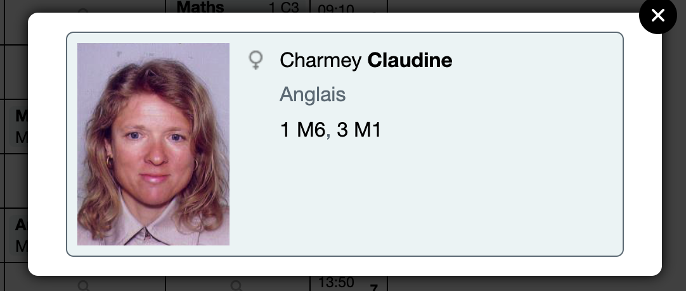Toutes les abbréviations des enseignants sont détaillées en bas de l’horaire :
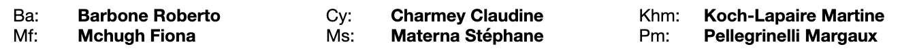Vous pouvez également cliquer sur les petites loupes dans les différentes cases pour afficher quelles salles sont libres à la période donnée :

Annuaire¶
L’annuaire permet de voir des informations sur les élèves et les enseignants, ainsi que de voir la liste des élèves par classe et la liste des maîtres par file.
Après avoir cliqué sur Annuaire, mettez le nom du maître, de l’élève, de la classe ou encore de la file sur lequel vous voulez avoir plus d’informations dans le champ Recherche, comme suit :
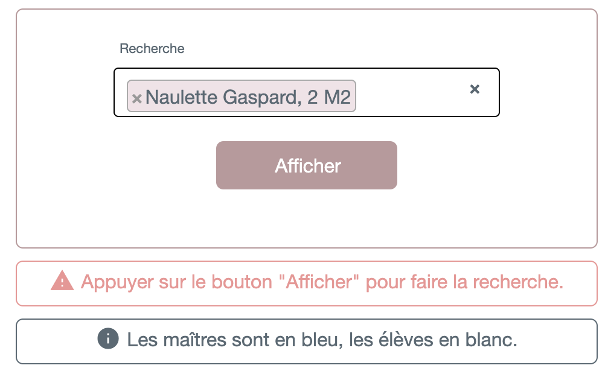Le bouton Afficher va montrer la photo du Gymnase de l’élève ainsi que sa date de naissance, sa classe, son maître conseiller et son doyen :

Aide¶
L’aide d’Hermes est présente sous la forme d’une F.A.Q avec plusieurs liens qui vous expliquent comment faire les choses, si vous en avez les droits.
Glpi¶
Glpi est une application WEB qui aide les entreprises à gérer leur système d’information. Cette solution est capable de construire un inventaire de toutes les ressources de la société et de réaliser la gestion des tâches administratives et financières.
(source: Wikipedia)
Ici à Gycha, nous utilisons ce service pour la gestion des tickets et des demandes qu’on recevoi par mail.
Authentification¶
Le lien pour accèder à l’interface de Glpi est:
http://glpi.edu-vaud.ch/
Ce lien vous dirige vers la page login du Glpi. Vous pouvez vous logger avec votre identifiant et mot de passe eduvaud.

Gestion des tickets¶
Si vous vous authentifiez correctement, vous entrez à la page d’accueil du Glpi. Depuis ici, vous povez allez vers la section des Tickets pour les gérer.

Pour bien pouvoir voir tous les tickets, controllez bien que vous êtes en mode supervisor.

Liste des tickets¶
Liste des cas céés par Glpi (soit depuis un email envoyé à la boîte mail de Glpi soit le ticket est créé depuis interface de Glpi) sont afficher depuis un filtrage par defaut qui affiche tout les tickets “non-résolus”
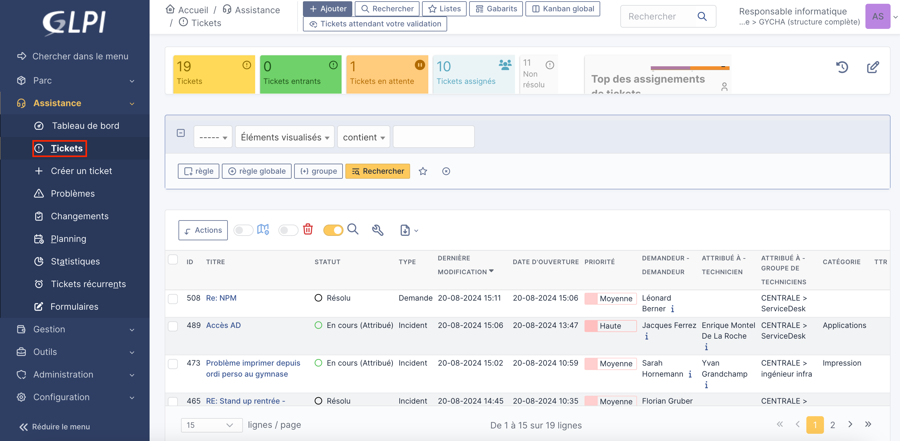Avec cet outils vous pouvez facilement ranger les tickets ou trouver les tickets que vous souhaitez.

Tips!
Vous pouvez aussi savegarder, réinitialiser ou masquer votre filtre avec les options qui sont situés à côté du boutons de la recherche. 
Attribution des tickets¶
Note!
Routage des ticket informatique, ou bien l’attribution des ticket permet de circuler les tickets entre l’équipe du support et facilite le traîtement des tickets.
Pour attribuer un ticket à sois même ou a un collègue par exemple, vous allez cliquer sur le ticket, ensuite dans la page du ticket cliquer sur le menu déroulant “Action”. Depuis la vous verrez l’option “Ajouter un acteur”.

Après avoir cliqué sur la page sur “Ajouter un acteur”, ça vous ouvre une fenêtre en vous demandant de choisir le type d’action (Demandeur, observateur, attribuer à).

Puis validez votre choix est l’attribution du ticket est faite!
Anaconda¶
Anaconda est une distribution libre et open source2 des langages de programmation Python et R appliqué au développement d’applications dédiées à la science des données et à l’apprentissage automatique (traitement de données à grande échelle, analyse prédictive, calcul scientifique), qui vise à simplifier la gestion des paquets et de déploiement3. Les versions de paquetages sont gérées par le système de gestion de paquets conda4. 1 (Source: Wikipdeia)
Introduction¶
Dans ce stage/projet pour documenter les differents activié informatique du gymnase, nous utilison le package Jupyter-Book qui converti les pages Markdown (.md) dans les quelles on travail en format Html qui sera enresgistré et publié via Github.
Installation Jupyter-Book¶
Logiquement nous allons besoin d’installler Anaconda d’abord mais il est normalement déjà installé sur les postes Gycham.
Il y a plusieurs maniers d’installer Jupyter-Book, depuis GUI2 de Anaconda Navigateur ou CLI3.
Note
Vous aller de toute façon avoir besoin de vos connaissances basiques sur les ligne de commandes pour utiliser Jupyter-Book même si on installe le package via la methode GUI.
GUI: Installation Jupyter-Book¶
Depuis votre machine, ouvrez Anaconda navigateur. Ce nous intéresess est dans la barre de gauche, Environments (les environements).

Quand vous cliquez sur “Environments” vous allez voir tout les environements disponibles, dans notre cas il y a seulement le “base” a disposition, nous allons donc créer un autre environement pour notre package Jupyter-Book.
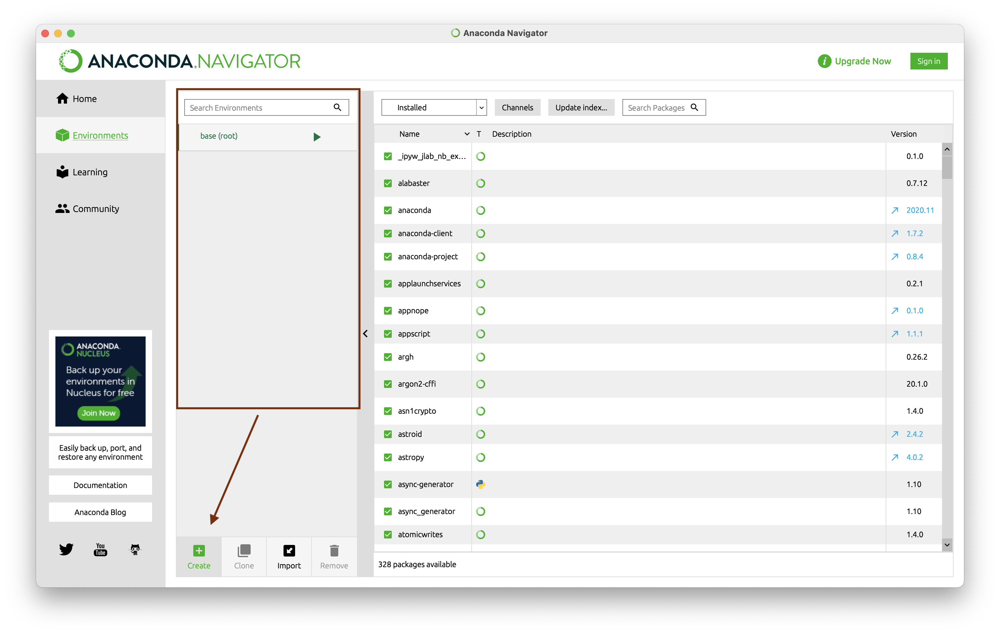Quand vous allez créer un nouvel environment, il vous demande de nommer votre environement et choisir une version de Python. Pour le nom nous allons mettre jupyter-book et pour la version vous pouvez choisir soit une version antérieur a la 3.8 ou toutes celles d’après. (j’ai actuellement la 3.10 et elle me semble assez stable).

Quand l’environement est créé, choisissez le. Ensuite:
Choisissez “not installed” pour afficher les packages qui ne sont pas installés
cherchez pour le package “jupyter-book”
Selectionnez le package “jupyter-book” dans les resultats
Appliques votre choix
Ensuite appliquez de nouveau les packages montrés dans la fenêtre suivante.

Voilà nous avons fini l’installation Jupyter-Book.
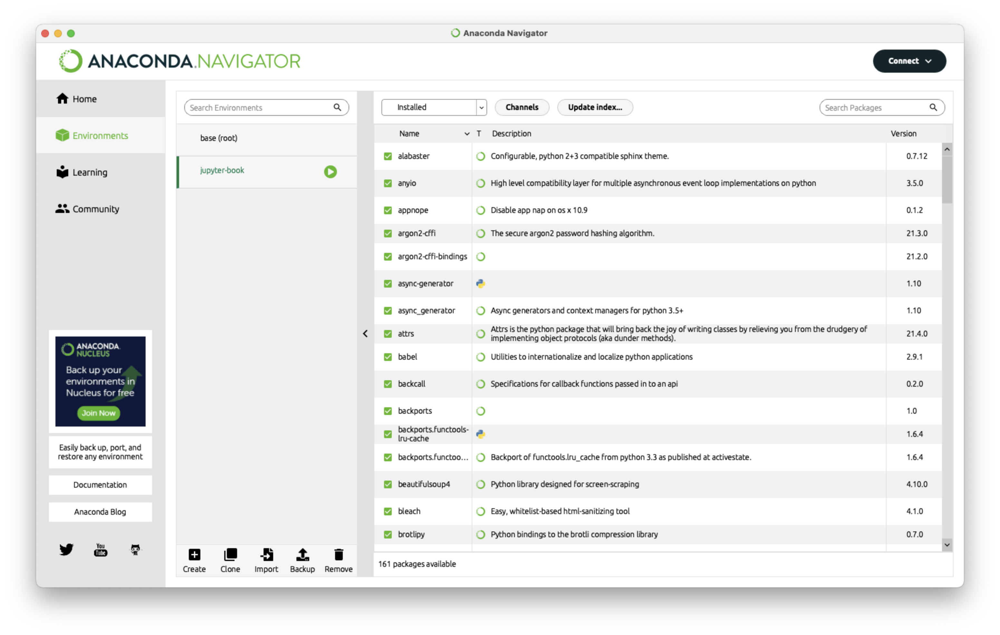Nous pouvons maintenant passer à Comment Utiliser Jupyter-Book pour builder notre site.
CLI: Installation Jupyter-Book¶
L’installation Anaconda sera la même que l’étap précédent.
Pour installer Jupyter-Book ouvrez le terminal de votre machine. Puis tapez “conda” pour voir si c’est la commande est reconnue. Si l’installation de Anaconda à été correctement fait vous verrez les messages suivant dans le terminal.
Ensuite nous allons créer l’environment qui contiendra notre package Jupyter-Book. La commande pour créer un environment. (nous allons nommer notre environment “jupyter-book”):
conda create -name jupyter-book

Qunad le terminal vous demande de continuer avec l’installation ou pas, tapez “y” pour dire yes.
On peut aussi choisir quelle version python à installer pour cette environment avec la commande suivannte:
conda create -name jupyter-book python=3.9
Maintenant on passe à l’installation package jupyter-book dans cet environnement. Avant d’installer le package jupyter-book il faut d’abord activer l’environment que nous venons de créer:
conda activate jupyter-book

Et on voit dans l’image que notre environnement qui était sur (base) est basculer sur jupyter-book. 4. Enfin nous passon à l’installation jupyter-book. Le package jupyter-book peut être installer depuis conda-forge, donc si vous voulez faire cette installation proprement, suivez en ordre:
conda config --add channels conda-forge
conda config --set channel_priority strict
conda install jupyter-book
Ensuite conda teste les différentes sources pour collecter des packages et les installer. Quand la collecte est fini conda vous demande de valider l’installation, tappez “y” pour valider et normalement c’est tout!

Utilisation Jupyter-Book¶
Pour utiliser jupyter-book vous allez utiliser la ligne de commande, c’est comme ça que ça marche, même si vous avez installer jupyter-book avec le GUI de Anaconda.
Jupyter-book suit un schemas pour créer le site, on ne peut pas lancer le build depuis n’importe où.

Dans l’image ci-dessus, on voit le dossier documentation-stage-meta (qui est le dossier qu’on clone depuis Github), les emplacements des fichiers et les sous-dossiers. Le dossier qui nous concerne le plus pour lancer jupyter-book est src. Ce dossier contient les documents que vous allez modifiez pour le site et les photos. De coup c’est depuis ce dossier que vous pouvez lancer jupyter-book et créer le site.
En utilisant comand cd4 vous pouvez naviguez entre les dossiers. Quand vous êtes bien à l’emplacement dossier source, vous pouvez lancer cette commande:
jupyter-book build .

Quand il a bien généré le site, il vous donne un lien vers le site en local, vous pouvez le copiez dans votre navigateur web pour voir les modifications que vous avez effectué dans vos documentations.
Liens Utiles¶
Les liens utiles qu’il me sembles utiles pour ce stage.¶
Titre |
Descrition |
|---|---|
Coffre-Fort pour les mot de passe. Accessible avec votre compte DGEP |
|
Une MDM (Mobile Device Management) permettant la gestion des appareils dans le reseau |
|
Hermes II est un outil qui vous sera fourni et qui vous permettra de rechercher des informations concernant les élèves, maîtres et classes du gymnase. plus… |
|
Aplication WEB qui permet aux enreprises de gérer leur system d’information. plus… |
|
Un tuto simple pour MarkDown |
|
Guide complet pour création des pages MarkDown avec jupyter-book, vous l’aurez besoins pour créer ces pages de documentations |
Liens pour les applications utiles¶
Titre |
Description |
|---|---|
Depuis ce site vous pouvez télécharger les packages Office pour mettre à jour dans jamf admin |
|
Depuis ce site vous aurez les liens pour accèder les différentes versions du MacOS pour télécharger. C’est utile quand vous voulez avoir le dmg d’un OS |
|
Ce program permet de créer des profiles de configurations qui contiennet aussi les parameteres de confidentialité |
|
Gifski permet de créer des Gif à haute qualité facilement |
|
Normalement vous trouvrerez ce package dans la chaine Jamf de votre compte Teams. |
|
Editor de code |
|
Program native du Github pour gérer vos prjets et interagir avec Github depui ce program sans passer par l’environnement Web |
|
Ce program vous permet de créer les profiles facilement |
|
Ce site est un alternative Mac de ninite.com qui permet mettre à jour des packets ou installer plusieurs application en même temp pour gagner du temp |
Information complémentaire¶
Dans cette partie du site je vais vous explique comment mettre à jour le site / rajouter du contenu. En parallèle je vais vous donner plusieur d’informations concernant les pannes que vous pourrez rencontrer et le fonctionnement du réseau de l’école. je vais aussi vous expliquer le fonctionnement de l’usi, la dgnsi, la dgep, la dgo et les outils qui sont à notre disposition.
Mettre a jour et modifier le site¶
Tout d’abord il faut que vous puissiez ouvrir les fichiers sur un logiciel de code (j’utiliser visual studio) ensuite il faut que vous vous rendiez dans le finder, Dans le dossier “src” du site. c’est dans ce dossier que vous allez soit modifier des fichiers existant soit en rajouter. pour le modifier il suffit d’ouvrir un fichier qui existe déjà et de le modifier.
Note
Pour faire des captures d’écran il faut appuyer sur : commande, MAJ, 4
si vous voulez utiliser des images il faut les mettre dans le dossier image

Pour rajouter un fichier c’est un peut plus compliquer. il faut ouvrir le fichier “_toc.yml” et une fois dedans vous pouvez ajouter une section ou une sous-section. Dans tous les cas si vous rajoutez quoique ce soit dans ce fichier il faudra aussi créé un fichier dans le dossier “src” avec le même nom.

EX : pour créer cette page j’ai dû rajouter dans le fichier “_toc.yml” un file du nom de “InformationComplementaire” donc dans le dossier “src” j’ai dû créer un fichier du même nom.


pour appliquer votre modification il faut exécuter dans le terminal une suite de commandes. Pour ce faire aller dans la barre en haut quand vous êtes sur le fichier que vous voulez modifier puis cliquer sur terminal :

Ensuite en bas de votre page il devrait y avoir une nouvelle “fenêtre incruster dans votre fenêtre”.

une fois votre modification faite il faut aller sur le terminal et taper la commande :
conda activate jupyter-book
Note
Cette commande doit être tapée uniquement si vous n’êtes pas déjà sur l’environnement jupyter-book. dans le terminal s’est marqué entre des parenthèses (base) ou (jupyter-book).
ex (ici je suis déjà sur jupyter-book):

Attention
pour que la commande fonctionne il faut que vous soyez dans le bon dossier (celui du site).
donc si vous ne savez pas ou vous êtes, taper dans le terminal :
pwd
Cela vous indique où vous vous trouvez. ensuite pour vous placer au bon endroit (si vous n’êtes pas au bon endroit) il vous suffit de taper “cd” et de glisser le dossier dans lequel vous voulez vous trouver dans le terminal.
Maintenant que vous êtes dans le bon dossier et que vous êtes sur le bon environement (jupyter-book) vous pouvez taper la commande suivante :
Jupyter-book build .
Voilà ! une fois que tout ça et faits vous pouvez voir le changement en local mais pas en ligne. Des modifications que vous avez apportées au fichier.
Note
il suffit de copier le lien qui vous est fourni quand vous tapez la commande build .

Si vous voulez pouvoir voir vos modifictions en ligne il faut aller sur gitHub desktop pour push toutes les données que vous avez modifiées. Mais avant ça il faut sélectionner le bon dossier.

Une fois que vous êtes sur le bon dossier il faut faire un commmit à la branche principale.

une fois que c’est faits il faut cliquer sur push en haut à droite.
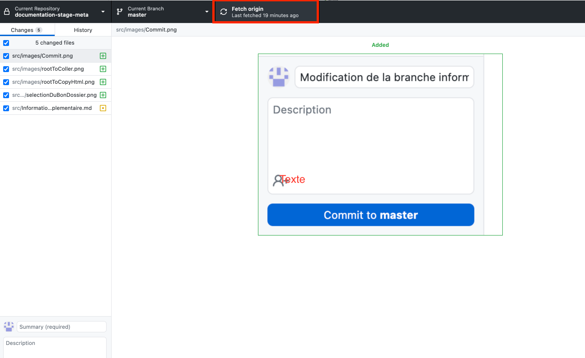
Ensuite vous sélectionnez le deuxième dossier est vous faites la même chose. Une fois que c’est fait vous aller dans le finder et vous aller sur le dossier “src > build > html” et vous copier l’intégralité du dossier.
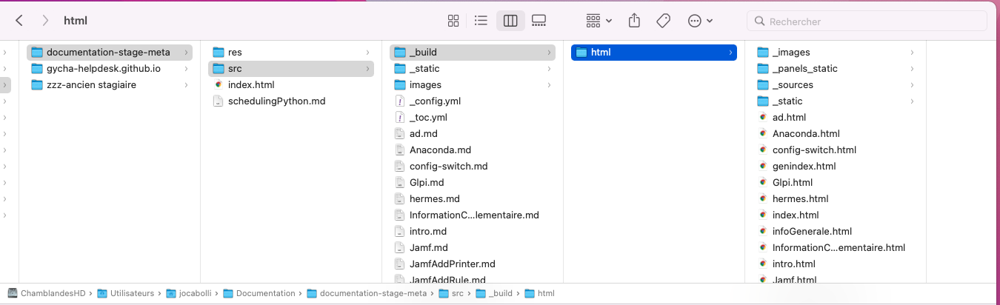
ensuite vous allez sur le dossier (gycha-helpdesk.github.io) est vous coller le tout dans le dossier 9adef59……
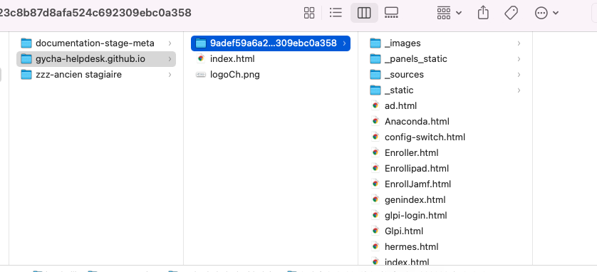
si ça ne marche pas refaites-le. Mais en général il faut juste attendre un peu et recharger la page.
commande qui pourrais vous être utile¶
Pour exécuter une commande jamf il suffit de connecter n’importe quel ordinateur sur le réseau de l’école par câble et se rendre dans le terminal. Cette commande sert à activer toutes les règles que n’importe quel ordinateur peut recevoir.
Attention
Pour que la commande fonctionne correctement il faut l’éxécuter plusieurs fois. Parce que il y a beaucoup de règles qui sont éxécutées en même temps est certaine règle dépendent d’autres règle. Du coup il est possible que l’exécuter une seule fois ne suffise pas.
sudo jamf policy
si vous voulez apeller un règle précisement :
sudo jamf policy -event NomDeLaRegle
Attention
il ne faut pas tapez exactement le nom de la regle. Il faut taper l’événement personnalisé de la règle (l’encadré en vert). (En général c’est le nom de la règle). Pour vérifier si le nom de la règle est celui de son événement personnalisé sont les mêmes il suffit de cliquer sur la règle.
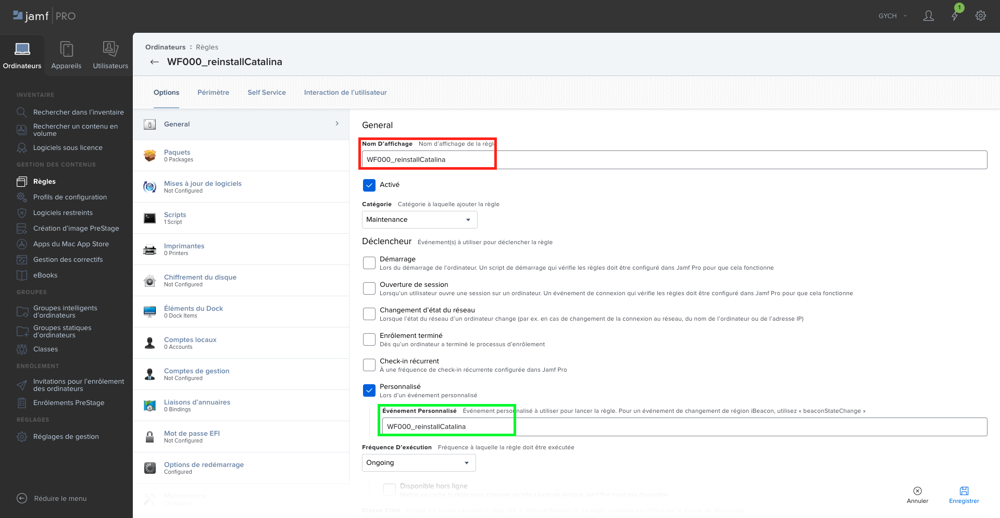
Ordinateur de prêt¶
Pour configurer un ordinateur a prêté il faut commencer en lui installant l’OS qu’il supporte (Catalina pour 2012 et Big Sur pour 2014). Sur ce site il y a toutes les informations et version. De macOS High Sierra jusqu’à macos Big Sur. Ensuite il faut vérifier que l’rodinateur n’a pas plusieurs disks. Si c’est le cas il faut aller dans “utilitaire de disques” et supprimer ceux en trop et en garder un seul (chamblandesHD).

Puis appliquer les règles de jamf (soudo Jamf policy). Il faut vérifier que dans les applications l’ordinateur a bien Outlook, Teams, Word, etc. Une fois que vous avez faits toutes ces étapes il ne reste plus qu’a créé un compte admin (user : adminl et Mdp : Gym _09). Il ne faut pas oublier son compte (un compte utilisateur) et modifier dans les teams le fichier invantaire en classifiant l’ordinateur par rapport a son nom.
Shéma réseau des salles de classe en général¶
VLAN :
34 = serveur.
48 - 49 = ordinateur personel.
40 = Poste de l’école.
38 = Imprimante
32 = materiel infra (switch, etc)
voici les switchs réseau que vous retrouverez dans toutes les salles de classe.
Note
Le port 1 est pour internet, le port 2 pour le mac mini (le Pc fixe), le port 3 le beamer, le port 8 c’est pour les ordinateurs personnels des profs.

Comme on peut le voir à l’arrière il n’y a que l’alimentation.

Note
Normalement a l’avant il y a juste le bouton power et input, le bouton input change quel câble hdmi sera affiché au beamer. Comme on peut le voir sur l’in 1 ça sera la Wacom donc l’ordinateur fixe (le mac mini). In 2 ordis perso donc l’rodinateur que le prof amène ou les élèves. In 3 c’est pour la caméra qui est dans la salle.

Note
Le port HDMI “output” c’est le câble HDMI qui relie le beamer (il sert de sortie pour toutes les autres entrées hdmi), l’in 3 est relié à la caméra, l’in 2 à l’rodi perso, et l’in 1 au mac mini.

Note
Sur le Mac mini ce n’est pas compliqué même s’il en donne l’impression. Tout à gauche c’est l’alim du mac mini, ensuite c’est le câble réseau donc internet (sur la photo c’est le câble rouge). Après tout le reste est relié ensemble jusqu’au même câble. Sur ce même câble il y a le câble HDMI du mac mini, un câble USB(il sert à relier les ports USB de la Wacom au mac mini s’il y en a) et pour finir l’alim de la Wacom est tous ces câbles est réuni en un seul est il est connecter a la wacom.

Fonction / shéma de l’usi / dgep / dgnsi¶
Pour gérer le support des écoles post obligatoires ils ont créé un système en suivant le modèle d’ITIL.
Donc pour commencer toutes les écoles ont un helpdesk (le niveau 1) si les commandes dépassent notre compréhension ou si elle dépasse notre domaine d’action. Le niveau 2 c’est l’usi, le niveau 3 c’est les ingénieurs qui sont aussi a l’usi mais c’est une autre partie et pour finir il y a le niveau 4 c’est le fournisseur des applications ou des services.
Note
Sur le schéma on peut constater qu’une personne exécute plusieurs fonctions en même temps, Symplement c’est le chef de l’usi donc il a plusieurs postes.

Note
L’usi peut aussi accéder au serveur Sql et y exécuter des commandes.

Information supplémentaire¶
kahoot¶
Sur kahoot il est possible de lancer en boucle un quiz. Pour ce faire il faut accéder à la bibliothèque ou son organiser tous vos quiz. ensuite cliquer sur jouer (sélectionner le quiz que vous voulez lancer en boucle).

Ensuite une pop-up s’affichera avec deux modes de jeu, choisissez celui de gauche.
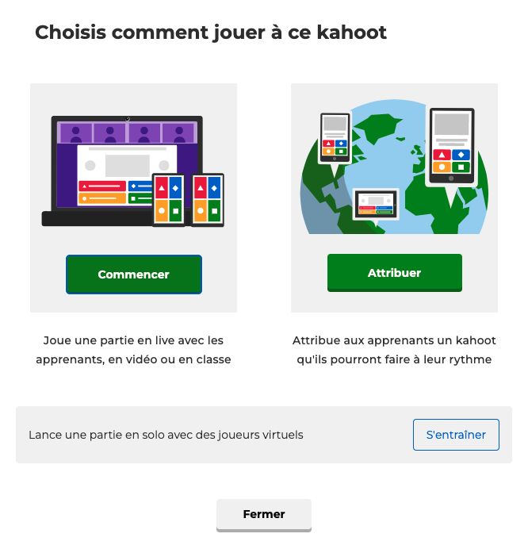
Une fois le mode de jeux choisi il faut aller dans les option pour les afficher en selectionner passet automatiquement les questions des questions.

VMware / Vsphere¶
Comment ce connecter a Vsphere

Sur Vsphere il y a une notation un peu spécial vous pourrez la retrouver ici :
DUS = DC (Domain controler)
NGE = Netwotk (DHCP, NPS, FFSO)
PGE = Printer (papercut)

Site de vente / achat et imprimante¶
L’ancien nom du site de “vente, achat” de matériel pour les établissements post obligatoire s’appelait “le Dol”. Maintenant ils ont changé pour “la place”.
Note
Les écoles post obligatoire ont des rabais immenses sur les licences, le matériel etc. (chez Dell ça peut aller jusqu’à du 60% voir plus). Ils ont des licences office pouvant aller jusqu’à 5.- par personne.
Pour dépanner les imprimantes en général c’est parce que la personne a mal tapé son mot de passe du coup il faut réafficher le pop-up et pour ça il faut soit relancer une impression soit cliquer en bas à gauche de l’écrant ensuite il faut cliquer sur la petite flèche et normalement ça réaffichera le pop-up.
Problème d’affichage quand on créé une section sur le site¶
Quand on créé une section pour la première fois si vous ne voulez pas qu’il y ai un problème d’affichage.

Note
Pour pouvoir mettre un gif sur le site j’ai utiliser un site de conversion de fichier .mov en .gif (les fichiers .mov c’est les fichier quand tu fais une vidéo de ton écran). Ensuite tu les place dans le dossier images du site et voilà
il faut impérativement executer la commande suivante si vous voulez régler le problème :
jupyter-book clean .
Attention
pour que la commande fonctionne il faut que vous soyez dans le bon dossier (celui du site). Au même endroit que pour rexecuter la commande jupyter-book build .
Attention
Ensuite il faut absolument executer la commande :
jupyter-book build .
Créer un PDF à partir de jupyter-book ¶¶
Il est possible de créer un seul PDF à partir du code HTML de votre book. Cela commence par convertir tout le contenu de votre book en un seul fichier HTML, puis le rend au format PDF en émulant un navigateur à partir de la ligne de commande.
Installation¶
Votre système devra utiliser pyppeteerpour analyser le HTML généré pour la conversion en PDF.
Vous pouvez l’installer comme ceci :
pip install pyppeteer
Vous devrez peut-être également installer cet ensemble de packages ci-dessous (sur les systèmes * nix):
gconf-service
libasound2
libatk1.0-0
libatk-bridge2.0-0
libc6
libcairo2
libcups2
libdbus-1-3
libexpat1
libfontconfig1
libgcc1
libgconf-2-4
libgdk-pixbuf2.0-0
libglib2.0-0
libgtk-3-0
libnspr4
libpango-1.0-0
libpangocairo-1.0-0
libstdc++6
libx11-6
libx11-xcb1
libxcb1
libxcomposite1
libxcursor1
libxdamage1
libxext6
libxfixes3
libxi6
libxrandr2
libxrender1
libxss1
libxtst6
ca-certificates
fonts-liberation
libappindicator1
libnss3
lsb-release
xdg-utils
wget
Appliquer les commandes / construire le PDF¶
Pour créer un seul PDF à partir du code HTML de votre livre, utilisez la commande suivante :
jupyter-book build . --builder pdfhtml
ou
jb build . --builder pdfhtml
Voilà ensuite aller dans vore dossier src > build > PDF et vous y retrouverez le pdf

Section MachineVirtuelle¶
VMWare fusion comment crée une machine virtuelle de base¶
C’est quoi VMWare fusion ?¶
VMware Fusion permet aux Mac Intel d’exécuter des machines virtuelles avec des systèmes d’exploitation invités (tels que Microsoft Windows, Linux, NetWare, Solaris ou macOS) dans le système d’exploitation macOS hôte.
(wikipedia)
Début de la marche à suivre¶
Nous allons utilisez VMware
Assurez vous que vous avez un fichier .iso pour les machines virtuelles

Cliquez sur le petit plus et prennez le choix “nouveau”
“Continuer”.
Selectionez l’option pour choisir les iso.
Cliquez sur celle que vous voulez.
Prenez le système d’exploitation qui coïncide avec l’iso
Plus qu’a cliquez sur Terminer.
Lancez la machine avec un double clic
Section Réseau¶
Active Directory de la DGEP¶
Information
Tous les comptes Eduvaud des élèves et des professeurs sont dans une Active Directory centralisée. L’accès à l’AD est utile pour rechercher des informations sur le compte de quelqu’un ainsi que pour effectuer des manipulations telles que réinitialiser le mot de passe d’une personne par exemple. `oiQue vous soyez connectés dans le réseau du Gymnase ou pas, la procédure d’accès à l’AD est similaire au début.
Tout d’abord, installez l’application Microsoft Remote Desktop (vous pouvez la trouver sur l’App Store).
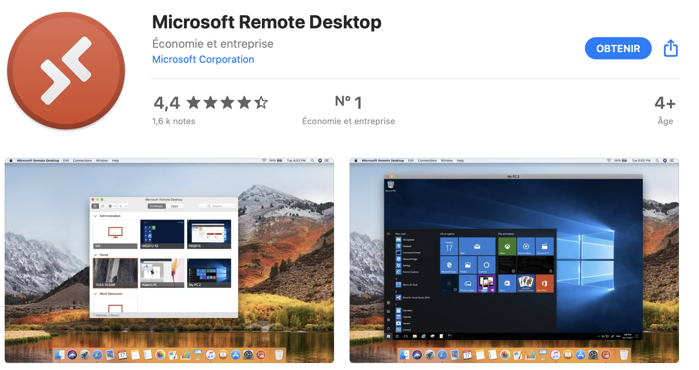Ensuite, cliquez sur le petit “+” dans la barre d’outils, puis Add PC:
 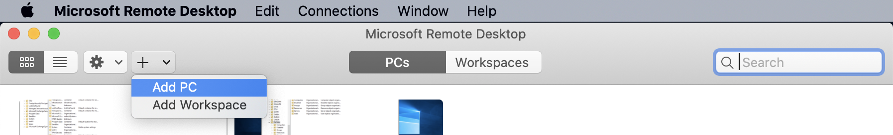
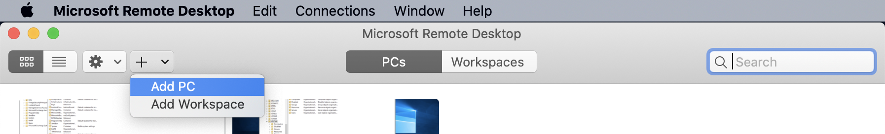
Vous devriez voir le formulaire suivant :

Dans le réseau du Gymnase¶
À l’intérieur du réseau du Gymnase, il suffit d’ajouter un nouveau PC paramétré comme suit:

Pour le premier champ, PC Name, mettez l’adresse IP du serveur de la DGEP, 10.226.34.17.
Pour le deuxième champ, User Account, un compte doit être créé pour vous.
Les autres champs peuvent être laissés par défaut.
Tip
Je conseille de remplir le champ Friendly name, il vous permettra de retrouver l’ordinateur plus simplement plus tard.
Cliquez ensuite sur Add et vous devriez voir l’ordinateur suivant qui est apparu sur la page principale:

Comme vous pouvez le voir, j’ai mis “Server AD” dans le champ Friendly name du formulaire.
Finalement, double-cliquez sur le carré et une nouvelle fenêtre devrais s’ouvrir, vous demandant si vous voulez bien vous connecter au serveur :

Cliquez sur Continue, et vous le serveur de la DGEP devrais s’ouvrir dans une nouvelle fenêtre.
Note
Le message vous préviens que le certificat n’a pas pu être vérifié. C’est simplement parce que la DGEP produit elle même ses certificats plutôt que de ses les faire créer par une entreprise externe reconnue, mais ça ne devrais pas poser de problèmes de sécurité.
Hors du réseau du Gymnase¶
Hors du réseau du Gymnase, la procédure est un peu plus complexe.
Tout d’abord, ajoutez un nouvel ordinateur dans Microsoft Remote Desktop parametré comme suit :

Avec pour l’adresse de l’ordinateur, PC name: rdfarm.dgep.edu-vaud.ch
L’User account est le même que précedemment, il doit être créé pour vous.
Un paramètre supplémentaire doit être rentré, le Gateway. Pour ce faire, cliquez sur Gateway > Add Gateway. Vous devriez voir le formulaire suivant :

Dans Gateway name, mettez : remote.dgep.edu-vaud.ch
Mettez le nom que vous voulez dans Friendly name, puis votre compte dans User account.
Une fois que c’est fait, double-cliquez sur le nouvel ordinateur qui s’est ajouté et vous devriez entrer dans le bureau du serveur Windows.
Recherchez ensuite l’application Microsoft Remote Connection:

Ouvrez-la, vous devriez arriver sur un formulaire que vous compléterez comme suit :

Dans le champ Computer, mettez l’IP, 10.226.34.17
Dans Username, mettez DGEP\<votre_id> où <votre_id> est l’identifiant qui a été créé pour vous.
Vous pouvez ensuite sauvegarder sous (Save As) cette configuration sur le bureau :

Il suffit ensuite de double-cliquer sur l’icône ainsi créée pour se connecter à l’Active Directory.
Rechercher un compte¶
Tous d’abord il faut rechercher “Active Directory” dans la barre de recherche (en bas à gauche).
Ensuite, Sélectionnez EDU –> si possible allez sous dossier GYCHA
Double-cliquez sur la loupe pour mener une recherche de compte. (elle se trouve au-dessus des dossiers dans la barre d’outils prêts du filtre).

Notez le nom, le prénom ou les deux et validez la recherche de compte.

Normalement le compte utilisateur devrait apparaitre. Si cela ne marche pas, essayer d’effectuer la recherche plus loin (Genre : dgep.edu-vaud.ch)

Faite un clic-droit sur un des comptes et sélectionnés “propreties”.

Dans “General” vous pouvez voir son email.
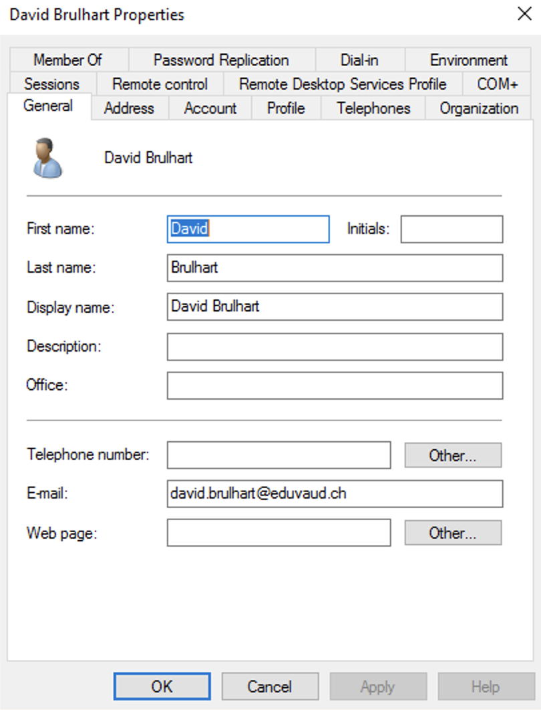Dans “Account” vous pouvez voir ses identifiants et son email.

Réinitialiser le mot de passe d’une personne¶
Rendez-vous sur le résultat de la recherche des comptes utilisateurs.
Clic-droit sur le nom de l’utilisateur qui est affiché et cliquez sur reset password.
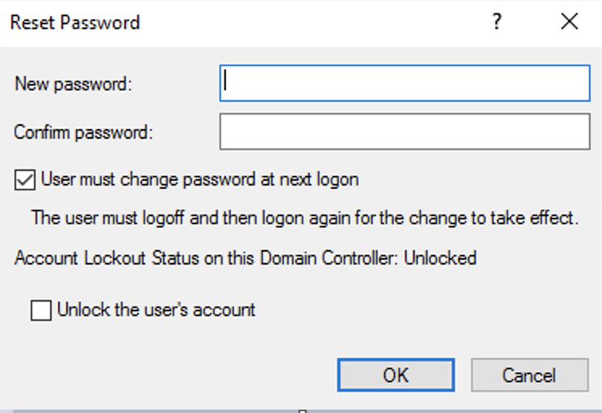Mettez-lui comme code : Chamblades2021.
Cochez l’option pour que l’utilisateur aille la possibilité de changer son mot de passe. Si vous n’avez pas le droit de cocher l’option, c’est que l’utilisateur ne fais pas partie du gymnase
Envoyez un mail de confirmation à la personne.
Voilà maintenant vous savez tout.
Mettre à jour l’inventaire¶
Pour bien suivre et prendre une trace de changements au niveau des matériels informatiuques il faut toujours mettre à jour le fichier inventaire dans qui se trouve dans le serveur de fichiers.
Note
Actuellement (décembre 2021), le fichier inventaire le plus à jour est celui qui se trouve dans: Teams > GychaIT > Files > Inventaire > 2020
Accéder au serveur des fichiers¶
Pour commencer, ouvrez le Finder et dans les options Finder, choisissez “Aller” et ensuite “Se connecter au servuer”
Dans la fenêtre suivante tappez l’adresse du serveur du fichier puis connecter. Adresse pour acceder au serveur des fichiers:
smb://gycha-srv-fs01
Ensuite il vous demande de vous identifier sur le serveur, mettez votre identifiant AD ou Eduvaud puis connectez vous.

Si authentification s’est faite sans erreur, une autre fenêtre s’ouvre avec une liste des volumes à disposition. Nous allons evidemment choisir IT.
Voilà maintenant vous vous êtes bien connecter au serveur des fichiers et vous avez accès au tout les dossiers et documents inventaire.

Changer nom d’un poste¶
Dans les cas où on veut changer le nom d’un pc ou laptop dans l’inventaire nous devons aussi le changer dans Active Directory. Cela prend beaucoup de temps si on le fait à la main. Il existe un script Python qui met à jour AD par rappot aux changements dans le fichier inventaire et crée un fichier CSV dans dossier Readonly (il se trouve dans le dossier racine). Donc si on met à jour ce fichier inventaire et lancer le script, AD sera aussi à jour.
Emplacement du fichier inventaire à mettre à jour (dans serveur des fichiers):
/IT/inventaire/2021/InventaireNaming.xlsx
Lancer le script Python¶
Dans le même dossier se trouve le fichier script. Il s’appelle gycham_naming_export.py .
Pour lancer ce fichier nous aurons besoin du terminal. Dans terminal tappez python ensuite une espace, puis glisser le script dans le terminal.

Maintenant il vous faut seulement tappez sur la touche “Enter” pour lancement script. Quand l’operation réussie, nous pouvons aller voir le fichier CSV que ce script à généré pour voir si le changement à été effectué sans erreur.
Emplacement du fichier CSV (dans serveur des fichiers):
/IT/ReadOnly/GYCH_naming.csv
Dans ce fichier vous pouvez chercher le pc dont vous venez de changer le nom.
Changement du nom sur le poste¶
Normalement les ordinateurs du GYCHA lance recurremment la régle qui met à jour les information de l’ordinateur avec l’AD. Mais parfois vous avez besoin de changer son nom plus rapidement (par exemple dans les cas où nous faisons le changement d’ordinateur).
Il existe quatre différentes règles dans Jamf qui nous permettent de mettre ajour le nom de l’ordinateur avec le fichier CSV qu’on a généré dans l’étap précédente.
renameComputer : met à jour le nom de l’ordinateur renamrComputerAD : il appelle la règle renameComputer en mettant à jour le même ordinateur dans l’AD renameComputerIN : il appelle la règle renameComputer en inserant l’ordinateur (qui n’était pas dans AD/Inventaire) dans Active Directory renameComputerOUT : contrairement la commande précédente, après lancement renameComputer, il sort l’ordinateur de l’AD (utilisé pour mettre en horsstock les ordinateurs)
Pour savoir comment lancer ces règles on peut référer à l’article “Déploiment OS depuis Jamf”, il y a un exemple de comment lancer une règle Jamf depuis terminal:
Configurer un switch Netgear GS108T¶
Pour commencer, branchez le switch au courant et attendez que tous les témoins lumineux au-dessus des ports Ethernet s’éteignent.
Si au cours de ce guide vous faites une erreur qui aurait pour effet de vous déconnecter du switch et que vous ne pouvez ensuite plus y accéder, il est toujours possible de réinitialiser ce dernier en appuyant sur le bouton Factory Defaults (petit trou à la droite du switch). Vous devrez alors tout reprendre depuis le départ.
Accès au switch¶
Désactivez tout d’abord votre wifi s’il est actif.
Branchez ensuite un câble ethernet depuis le port “1” du switch (celui qui est en jaune) jusqu’à votre ordinateur.
Ensuite, allez dans Préférences Système > Réseau.

Configurez le réseau ethernet comme sur l’image ci-dessus.
Configurer IPv4: Manuellement
Adresse IP: 192.168.0.X
Note
Le X est un nombre (entre 0 et 255) qui n’est encore assigné à auncun objet sur le réseau local.
Sous-réseau: 255.255.255.0
Appuyez ensuite sur Appliquer.
Ouvrez ensuite un navigateur et tapez l’adresse IP du switch dans la barre de recherche. Par défaut cette adresse est : 192.168.0.239.
Vous devriez tomber sur la page suivante :

Le mot de passe par défaut de ce modèle est : password.
Si vous tombez sur la page suivante, c’est que tout fonctionne :

System Information¶
Dans la page d’accueil, complétez le formulaire System Information.
Dans System Name, mettez le nom que vous voulez tout comme System Location. Les autres champs n’ont pas besoin d’être complétés.

VLAN Configuration¶
Allez ensuite dans l’onglet Switching > VLAN.

Vous devez ensuite ajouter 4 lignes dans le tableau de VLAN Configuration:
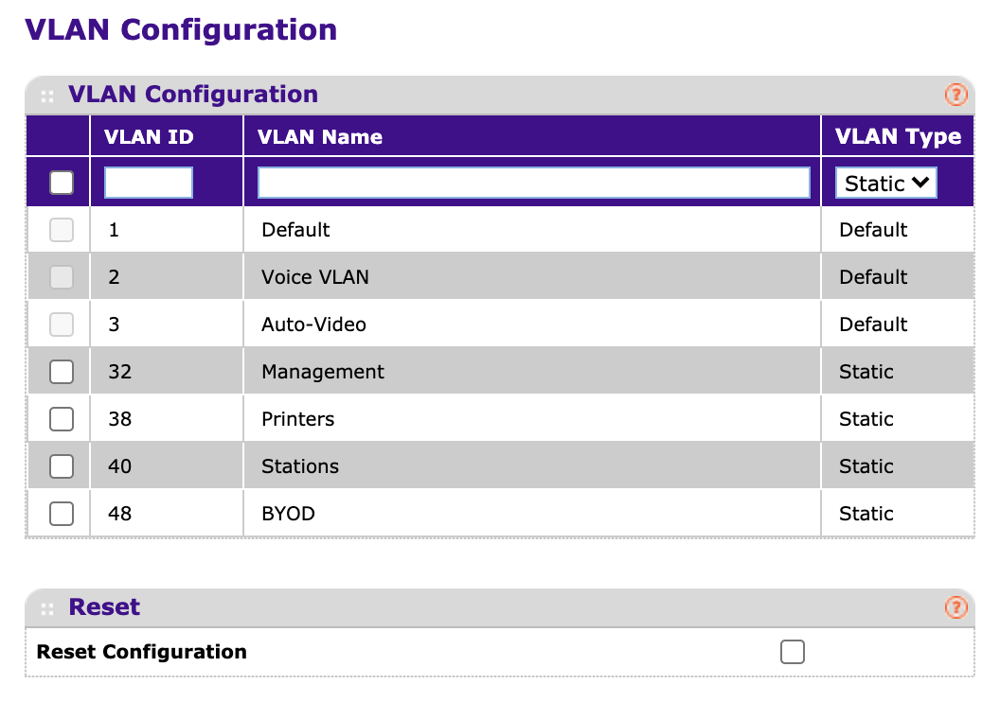Pour ajouter une ligne, entrez l’ID du nouveau VLAN dans VLAN ID, puis son nom dans VLAN Name. Le VLAN Type doit être laissé en “Static”. Une fois que c’est fait, il suffit d’appuyer sur le bouton “Add” tout en bas à droite de la page.

Rajoutez donc ces quatres lignes:
# |
VLAN ID |
VLAN Name |
|---|---|---|
1 |
32 |
Management |
2 |
38 |
Printers |
3 |
40 |
Stations |
4 |
48 |
BYOD |
VLAN Membership¶
Allez ensuite dans Advanced > VLAN Membership, comme suit:

Dans cette page, vous pouvez configurer quel VLAN est reconnu par quel port du switch:

Je peux prendre n’importe quel VLAN qui à été créé auparavant et le configurer de telle manière à ce que certains ports reconnaissent ce VLAN en tagged ou en untagged. Par exemple, voici une configuration possible du port 48:

Dans cet exemple, le premier port tag (tagged → T) le VLAN et les ports 5, 6 et 7 ne le tag pas (untagged → U). Les ports 2, 3, 4 et 8 ne reconnaissent donc pas du tout le VLAN.
Ainsi, vous pouvez configurer quels VLAN passera dans quel port. De manière générale, tous les VLAN seront en tagged dans le premier port et en untagged dans les ports spécifiques dans lesquels ils passeront.
Exemple de configuration VLAN Membership¶
Dans cet exemple, les ports 2 à 4 donnent du VLAN 40, les ports 5 à 7 du VLAN 48 et le port 8 du VLAN 38. Comme dis précédemment, tous les VLAN sont donnés par le premier port, en tagged, contrairement aux autres ports ou le VLAN est en untagged.
VLAN ID |
Name↓ Ports→ |
1 |
2 |
3 |
4 |
5 |
6 |
7 |
8 |
|---|---|---|---|---|---|---|---|---|---|
32 |
Management |
T |
|||||||
38 |
Printers |
T |
U |
||||||
40 |
Stations |
T |
U |
U |
U |
||||
48 |
BYOD |
T |
U |
U |
U |
Exemple de configuration VLAN Membership¶
Dans cet exemple, seul le VLAN 40 est donné par tous les ports.
VLAN ID |
Name↓ Ports→ |
1 |
2 |
3 |
4 |
5 |
6 |
7 |
8 |
|---|---|---|---|---|---|---|---|---|---|
32 |
Management |
T |
|||||||
38 |
Printers |
T |
|||||||
40 |
Stations |
T |
U |
U |
U |
U |
U |
U |
U |
48 |
BYOD |
T |
Port PVID Configuration¶
Ensuite, dans Port PVID Configuration, il est question de définir quels VLAN passera part quel port. Cette étape peut ressembler à l’étape précédente, mais elle est toutefois nécessaire.
Allez tout d’abord dans Port PVID Configuration :

Ensuite, il s’agit de modifier les lignes afin de définir le VLAN que donnera chaque port. Une ligne peut-être modifiée en cliquant sur le carré à sa gauche, ensuite, l’ID peut être modifié à celui correspondant:
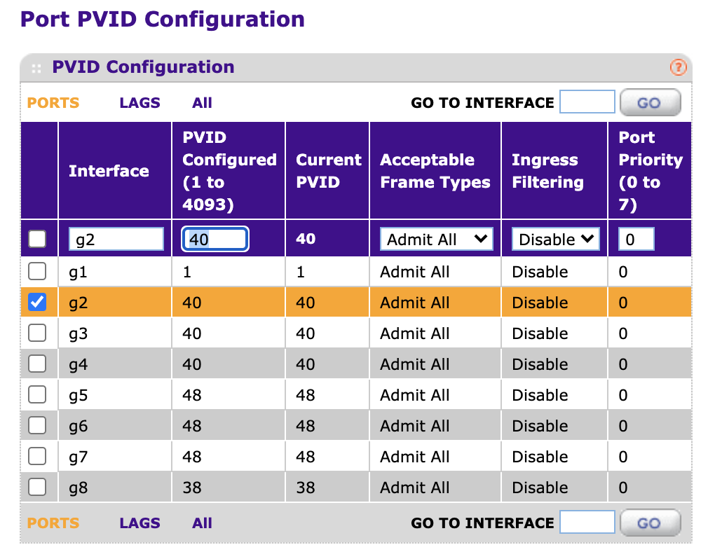Une fois que l’ID est entré, cliquez sur Apply.
Tip
Il est possible de modifier plusieures lignes en une fois.
Faites bien attention à garder la 1ère ligne avec le PVID 1, et à ne pas mettre le PVID 32.
Le résultat final pourrait ressembler à cela :
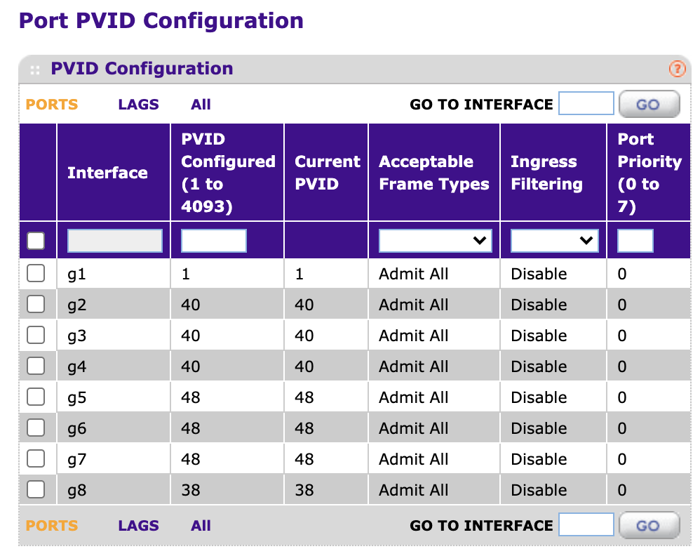IP Configuration¶
Enfin, la dernière chose qu’il reste à faire est de configurer l’adresse IP finale du switch, son masque de sous-réseau, son gateway ainsi que son port de management.
Pour ce faire, allez dans l’onglet System, puis IP Configuration :

Changez la configuration de Dynamic IP Adress à Static IP Adress.
Complétez ensuite le formulaire, l’image suivante est un exemple correct :
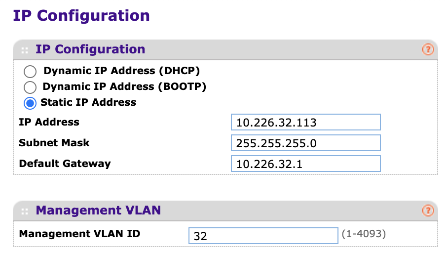Pour le champ IP Adress, une adresse IP pas encore utilisée sur le réseau doit être entrée. Pour voir tous les objets sur le réseau, vous pouvez aller sur http://ipam.dgep.edu-vaud.ch.
Pour le champ Subnet Mask, mettez 255.255.255.0.
Pour le champ Default Gateway, l’IP du gateway doit être mise, sur ce réseau elle est 10.226.32.1.
Enfin, pour le champ Management VLAN ID, mettez 32.
Cliquez enfin sur Apply.
Verification¶
Une fois que vous avez cliqué sur Apply, le switch ne devrait plus répondre. Pour vérifier qu’il a bien été configuré correctement, branchez le port de management du switch au réseau (le port trunk d’un autre switch par exemple). Il est ensuite normalement possible de se connecter à ce switch si son adresse ip est entrée dans un navigateur. L’ordinateur doit évidemment être connecté au même réseau.
Cisco Meraki¶
Meraki offre une gestion centralisée des appareils Cisco qui sont facilement accessible depuis un navigateur web ainsi que les telephones portables via Application Meraki.


{kind=link}
{kind=link}
{kind=link}
{kind=link}
{kind=link}
{kind=link}
{kind=link}
{kind=link}
{kind=link}
{kind=link}
{kind=link}
{kind=link}
{kind=link}
{kind=link}
{kind=link}
{kind=link}
{kind=link}
{kind=link}
{kind=link}
{kind=link}
{kind=link}
{kind=link}
{kind=link}
{kind=link}
{kind=link}
{kind=link}
{kind=link}
{kind=link}
{kind=link}
{kind=link}
{kind=link}
{kind=link}
{kind=link}
{kind=link}
{kind=link}
{kind=link}
{kind=link}
{kind=link}
{kind=link}
{kind=link}
{kind=link}
{kind=link}
{kind=link}
{kind=link}
{kind=link}
{kind=link}
{kind=link}
{kind=link}
{kind=link}
{kind=link}
{kind=link}
{kind=link}
{kind=link}
{kind=link}
{kind=link}
{kind=link}
{kind=link}
{kind=link}
{kind=link}
{kind=link}
{kind=link}
Login¶
Pour se connecter à l’interface WEB du Meraki, dabord il faut que vous demandiez à votre personne responsable d e céer un accès à cette interface, ensuite un email avec le lien pour créer un mot de passe sera envoyé dans votre boîte mail.
Ensuite, pour acceder au dashboard du Meraki, copiez le lien ci-dessous dans votre navigateur WEB:
https://n213.meraki.com
Ce lien vous amène ver la page login du site Meraki. Vous allez simplement tapper votre e-mail via le quel votre compte Meraki a été créé, ensuite tappez votre mot de passe.
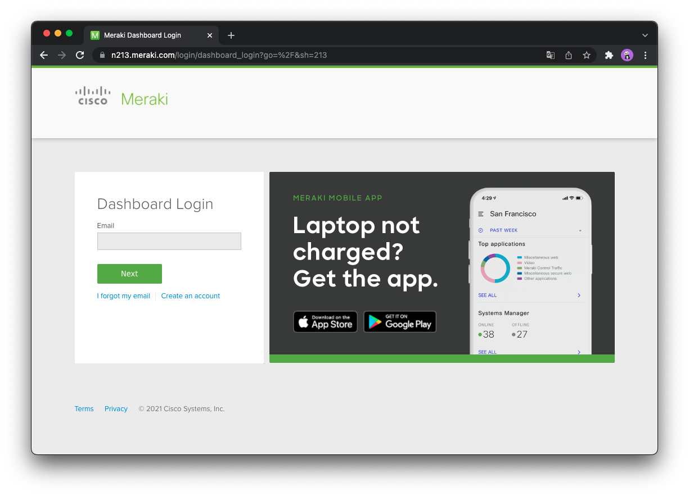{kind=link}
Après avoir saisie l’identifiant et le mot de passe, si les informations ont été correctes, vous serez dirigez vers le “dashboard” du Meraki, qui va resembler à la photo ci-dessous.
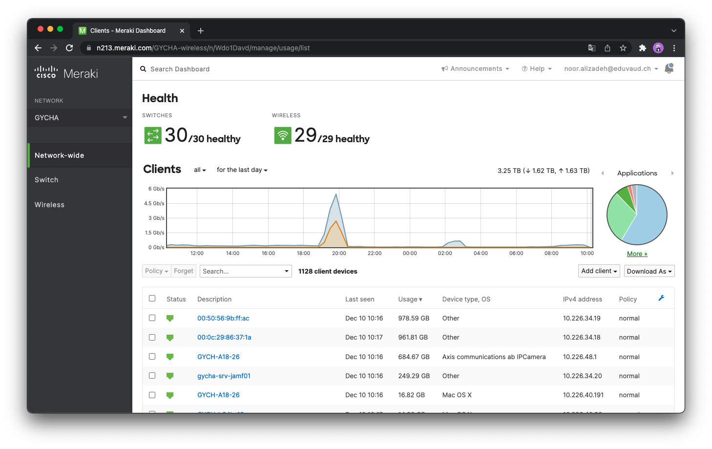{kind=link}
Configuer un port¶
Sur meraki vous pouvez configurer le port pour un swuitch à distant et le faire marcher via différents VLAN. Je vous montre comment configurer un port pour avoir accès au réseau imprimantes.
Allez sur le site Meraki et vous logger. Dans le menu à gauche choisissez Switchs.

Dans la list des switch, je choisis SW-A-A19-01 pour notre test.

Maintenant on peut choisir quel port on veut configurer.
{kind=link}
Je prends le port 13 comme c’est un port libre.

On voit que ce port est configurer avec le VLAN 32 qui est le VLAN management, Trunk. Cliquez sur l’icône à coté de Configuration pour modifier le port.
Danse ces photo vous voyez les modifications nécessaire pour changer le VLAN
VLAN 32

VLAN 38

Ensuite sauvegardez votre modificaition, l’appareil qui sera connecté à ce port sera dans le VLAN 38, imprimantes.